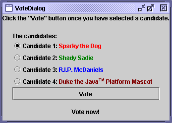
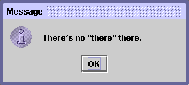

Feedback Form
|
|
Start of Tutorial > Start of Trail > Start of Lesson |
Search
Feedback Form |
VoteDialog
Topics covered in this example include: The last example in this lesson isVoteDialog. It illustrates the use of dialogs and radio buttons.
In
VoteDialog, the user casts a vote by selecting a radio button and clicking the Vote button. After the button is clicked, a dialog appears with an informational message or a follow-up question.Here's a picture of the
VoteDialogapplication:
TheVoteDialogapplication has one action listener that listens to clicks on the top-level container’s button. Each time the action listener receives an event, the application determines which radio button was selected and displays the appropriate dialog.For each group of radio buttons, you need to create a
ButtonGroupinstance and add each radio button to it.ButtonGrouptakes care of unselecting the previously selected button when the user selects another one in the group. You should generally initialize a group of radio buttons so that one is selected. However, the API doesn’t enforce this rule: A group of radio buttons can have no initial selection. Once the user has made a selection, exactly one button is selected from then on.Here’s the code from
VoteDialog.javaButtonGroupinstance that controls them. ThesetActionCommandmethod associates a specific dialog with each radio button item. We use thesetSelectedmethod to specify the default selected radio button.Note the use of HTML code on the radio buttons, which lets us specify multiple text colors within each button.final int numButtons = 4; JRadioButton[] radioButtons = new JRadioButton[numButtons]; final ButtonGroup group = new ButtonGroup(); ... final String defaultMessageCommand = "default"; final String yesNoCommand = "yesno"; final String yeahNahCommand = "yeahnah"; final String yncCommand = "ync"; radioButtons[0] = new JRadioButton("<html>Candidate 1: <font color=red>Sparky the Dog</font></html>"); radioButtons[0].setActionCommand(defaultMessageCommand); radioButtons[1] = new JRadioButton("<html>Candidate 2: <font color=green>Shady Sadie</font></html>"); radioButtons[1].setActionCommand(yesNoCommand); radioButtons[2] = new JRadioButton("<html>Candidate 3: <font color=blue>R.I.P. McDaniels</font></html>"); radioButtons[2].setActionCommand(yeahNahCommand); radioButtons[3] = new JRadioButton("<html>Candidate 4: <font color=maroon>Duke the Java<font size=-2><sup>TM</sup> </font size> Platform Mascot</font></html>"); radioButtons[3].setActionCommand(yncCommand); for (int i = 0; i < numButtons; i++) { group.add(radioButtons[i]); } //Select the first button by default. radioButtons[0].setSelected(true);
In our previous examples, our top-level container has always been aJFrame. Another kind of top-level container is a dialog--a window that is more limited than a frame. To create simple, standard dialogs, you use theJOptionPaneclass. The dialogs that
JOptionPaneprovides are modal. When a modal dialog is visible, it blocks user input to all other windows in the program.The code for simple dialogs can be minimal. For example, the following figure shows an informational dialog. Here’s the code that creates and shows it:
JOptionPane.showMessageDialog(frame, "There's no \"there\" there."); Every dialog is dependent on a frame. When that frame is destroyed, so are its dependent dialogs. When the frame is iconified, its dependent dialogs disappear from the screen. When the frame is deiconified, its dependent dialogs return to the screen. The AWT automatically provides this behavior. You can get more information on dialogs in How to Make Dialogs.
|
|
Start of Tutorial > Start of Trail > Start of Lesson |
Search
Feedback Form |
Copyright 1995-2004 Sun Microsystems, Inc. All rights reserved.